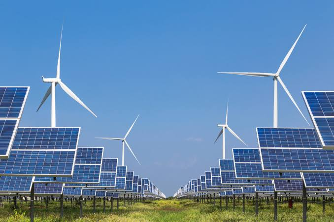

Dalam rangka mendukung transisi energi nasional menuju sumber daya yang lebih bersih dan berkelanjutan, PT PLN (Persero) memperluas proyek energi terbarukan di seluruh Indonesia. Beberapa proyek utama termasuk pembangunan Pembangkit Listrik Tenaga Surya (PLTS) di wilayah timur Indonesia, serta pengembangan Pembangkit Listrik Tenaga Angin (PLTA) di kawasan pesisir.
Inisiatif ini sejalan dengan visi PLN untuk menyediakan listrik yang andal sekaligus ramah lingkungan, serta mendukung target pemerintah dalam pengurangan emisi karbon.
Direktur Utama PLN menyampaikan bahwa kerja sama dengan berbagai mitra strategis internasional juga terus diperluas guna mempercepat adopsi teknologi bersih di Tanah Air.
← Kembali ke Daftar Berita